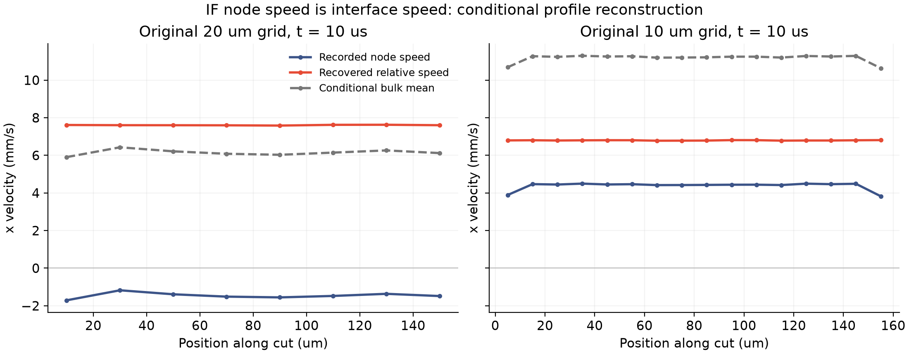

源码与冻结状态诊断 · 2026-11-13
粒子怎么动，
不等于水只会怎么流。
模型中既有粒子运动，也有液体相对粒子的排液。独立物理参照需要同时检查这两部分，不能只拿粒子速度代表整层液体。
源码里实际有两种运动
节点带着表活移动
机械子步更新节点位置，节点携带的液量和表活量保持不变。记录的速度来自位移除以时间步。
液体还会相对节点流动
排液子步另用压力差和 h³/(12μ) 迁移率传输液量，表活量在这个子步保持不变，并另行输运动量。
原生惯性与动能使用节点速度。仅凭这些离散定义，还不能唯一认定它是界面速度或整层平均速度；这正是后续连续物理参照需要澄清的地方。
已有状态中，相对流动是否很小？
读取原来已完成的 20、10 微米网格细时间步结果，在同一 10 微秒时刻、x=240 微米切面重建压力梯度。节点速度、滞后厚度和最终压力的取法与已有切面诊断一致，原始文件逐个校验，没有重跑轨迹。

| 原网格 | 节点 RMS mm/s | 相对 RMS mm/s | 相对／节点 | 条件剖面／节点匀速 截面动能比 |
|---|---|---|---|---|
| 20 μm | 1.47 | 7.61 | 5.19 | 22.97 |
| 10 μm | 4.38 | 6.80 | 1.55 | 6.98 |
在这两个冻结状态的重建中，相对速度没有小到可以直接忽略。因此，下一步的物理参照应分别保留界面运动与内部流动，而不能仅凭粒子速度核对所有惯性和通量。
重建本身核对了什么？
恢复的材料／相对液量流率复现已有切面数据，相对差异小于 10⁻¹⁰；切线长度核对通过。用独立高斯积分核对抛物线剖面的平均速度和二阶矩，误差小于 10⁻¹²。它们证明读取与计算一致，不能代替物理验收。
在本剖面假设下，平均速度为 uₛ+a，a=−h²∇p/(12μ)，h 是完整厚度。二阶矩包含 |uₛ|²+2uₛ·a+6|a|²/5；相对于平均速度的正剪切方差为 |a|²/5。这些经典关系没有写入求解器。
参考已有工作，下一步怎么走？
Lalli 与 Giusti（2024，JFM 986，A7）式 2.38 区分界面速度与内部速度，并进一步用界面应力平衡决定界面速度。我们只借鉴其变量区分，没有采用磁性、颗粒或表面黏度参数。经典剪切／伸展分解已有研究，不能作为本项目的新贡献。
下一步应建立边界条件一致的局部物理参照，联合核对通量、界面应力与功；根据时间尺度证据决定是否保留内部动态。此前的固定界面启动诊断提示，准静态响应本身也需检验。不能先拟合一个速率，再宣称完成边缘交换预测。
5 微米主计算保持原样。原 2% 时间、10% 空间与 10／50／200 微秒检查、物理通量／牵引力、交换系数、薄膜元厚度比及整体条纹／保留工况实验仍全部开放。